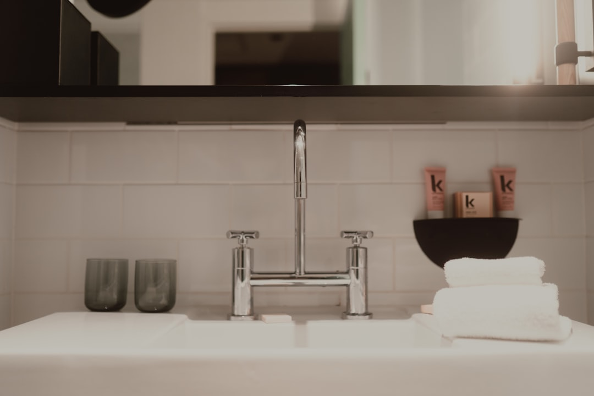

Start with the room issue, then compare quotes against the same brief. The source page points owners to 4 planning steps, notes coverage across 15 suburbs, requires waterproofing to AS 3740, and says work over $3,300 is set out in a written Domestic Building Contract. Those details matter more than browsing finishes too early, because leakage, layout and access questions can change scope before work starts.
For homeowners comparing bathroom renovations gold coast options, the practical first step is to describe what is failing in the room now, then check whether access, humidity or apartment rules could change the scope before quoting.
Bathroom Renovations Gold Coast Explained
The most useful cue on Bath Renovation Gold Coast is that tired rooms become more expensive when leaks, awkward layouts and rushed selections are left until quoting day. That is a practical way to frame the first conversation. Instead of starting with colours or fittings, write down what is wrong now, where it shows up, and what daily problem it causes.
This keeps the brief focused on the issue that will shape demolition, waterproofing, tiling or fit-off. A leaking shower and a cramped family bathroom may both need renovation work, but they do not begin from the same problem. If you can explain the fault clearly, each contractor is more likely to quote the same job rather than a different interpretation of it.
- Note the room problem in one sentence.
- Separate must-fix items from nice-to-have changes.
- List anything that can stay as it is.
Use local constraints only where they change the scope
The source page earns its local angle by pointing to local homes, access, humidity and apartment rules. That matters because a quote can shift for reasons outside tile choice. In a Broadwater apartment or a holiday-let ensuite in Surfers Paradise, apartment rules may affect how the job is organised. In an older family bathroom in Nerang, the more useful question may be whether the room is simply dated or whether leakage and layout are forcing broader work.
Rather than treating every suburb as its own pricing category, ask a tighter question: what local condition actually affects this room? It might be access, it might be humidity, or it might be the kind of home involved. If a contractor says local conditions matter, ask them to point to the exact part of the scope affected. That gives you something concrete to compare across written quotes.
Choose the service path that matches the room
The services listed on the source page give a practical decision path. Full bathroom work suits tired, leaking or impractical rooms where layout, waterproofing, tiling and fit-off need to be treated as one connected scope. Small bathroom work is described as a space-smart refit where storage, shower access and a cleaner layout matter more than extra floor area. Ensuite work is positioned around cramped shower rooms through to double-vanity retreats.
There is also a narrower path when the shower itself is the weak point. The shower replacement description focuses on membrane, drainage and screen details before fresh tiles go in. That is a useful test when owners are unsure whether they need a whole-room rebuild or a more targeted job. During the site visit, ask which part of the room is forcing the rest of the work. If the answer is not clear, the quote may not yet be clear either.
Read the paperwork before you compare finishes
The firmest checks on the page are in the written detail. It states that every project begins with a clear, itemised quote. It also states that wet-area waterproofing is carried out to AS 3740 by licensed waterproofers, with aspect certification on completion. For work over $3,300, the page says there is a written Domestic Building Contract. Those points give owners a stronger comparison tool than style boards alone.
When the quote arrives, read it line by line and test whether the written scope matches the room problem you raised at the start. If leakage is the concern, the waterproofing description should not be vague. If the room is mainly impractical, look for clear wording around layout and fit-off, not just product names. Consumer guidance from ASIC Moneysmart is also worth using when setting a renovation budget, because it helps keep the spending decision separate from the sales appeal of finishes.
Follow the four-step process with better inputs
The source page sets out four steps, enquire, clarify the job, written quote, then renovate. Owners usually get more value from that process when they arrive with a short written brief instead of trying to explain the room from memory. Include the suburb, a rough budget, what you want changed, and the main issue with the current bathroom. That mirrors the information the page asks for and makes the first conversation more efficient.
In the clarification stage, use questions that improve the next step rather than chasing instant certainty. Ask what part of the room needs closer inspection, what assumptions sit behind the quote, and what documents you should expect before work starts. Once you have more than one itemised quote, compare scope, waterproofing detail and contract wording before comparing finishes. The point is not to make every project identical. It is to make each proposal clear enough that you can see where the differences actually sit.
- Describe the current fault. Write one sentence on what is failing now, such as leakage, awkward layout or poor storage.
- List local constraints. Note any access, humidity or apartment-rule issue that could affect how the work is organised.
- Match the room to the service. Ask which renovation path fits the room and what evidence supports that choice.
- Check the written documents. Review the itemised quote, waterproofing detail and contract wording before approving works.
| If the main issue is | Likely project path | What to ask first |
|---|---|---|
| The room is tired, leaking or impractical overall | Full renovation | Does the quote link layout, waterproofing, tiling and fit-off in one clear scope? |
| Storage, shower access or movement is the bigger problem | Small bathroom refit | Which layout change improves daily use without pretending the room is larger? |
| The shower area is the obvious weak point | Shower replacement or upgrade | How are membrane, drainage and screen details handled before new tiles go in? |
Common questions
What should I tell a contractor before the first site visit? The source page asks for your suburb, rough budget and what you want changed about the bathroom. It also helps to describe the current fault clearly, because leaks, awkward layouts and practical frustrations affect the conversation from the start.
How do I know whether I need a full renovation or a smaller job? Use the room problem as the test. The source page positions full renovations for tired, leaking or impractical rooms, while small bathroom work is aimed at compact rooms where storage, shower access and layout matter more than extra floor area. If the shower itself is the weak point, the narrower shower-upgrade path may be the better starting point.
Which documents matter most before work begins? The page says projects begin with a clear, itemised quote, waterproofing is carried out to AS 3740 by licensed waterproofers with aspect certification on completion, and work over $3,300 is set out in a written Domestic Building Contract. Those are the main written checks to verify against the scope you approve.
This guide covers how to define the room problem, test local constraints and compare written scope before approving a bathroom renovation.